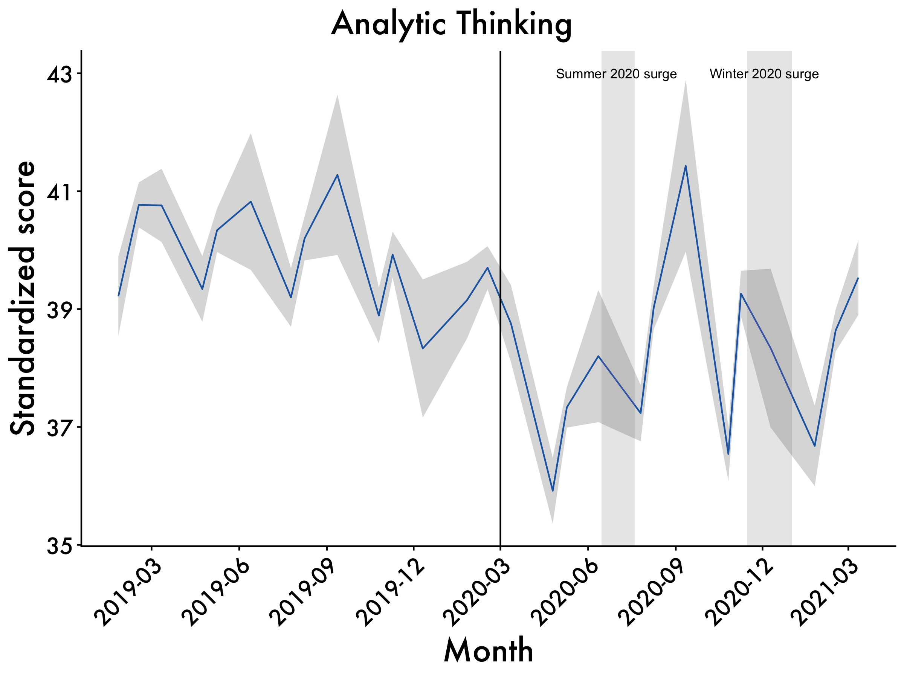
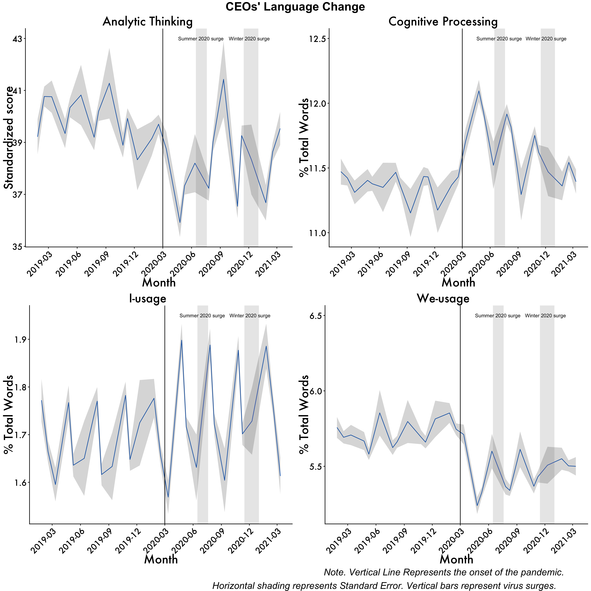

setwd("~/Desktop/Coding-Boot-Camp/Data-viz-basics")T-tests
Getting everything set up
Set Working Directory
Change to your own working directory (WD) to save things like plots. You can do that by modifying the file path or go session (on the upper bar) –> set working directory). Working directories are important in R because they tell the computer where to look to grab information and save things like results. This can vary by project, script, etc. so it’s important to consistently have the appropriate WD. If you are unsure what your current WD is, you can use the getwd command in the console (usually the lower left hand pane) to get your WD.
Load Packages
if (!require("pacman")) install.packages("pacman") #run this if you don't have pacman
library(pacman)
pacman::p_load(tidyverse, ggpubr, rstatix, caret, broom, kableExtra, reactable, Hmisc, datarium, car, DT,install = T)
#use pacman to load packages quickly One of the great things about R is its ability to be super flexible. This comes from R’s ability to use different packages. You can load packages into your current work environment by using the library(PACKAGE) function. It is important to note that in order to library a package you must first have it installed. To install a package you can use the install.packages("PACKAGE") command. You can learn more about the different types of packages hosted on the Comprehensive R Archive Network (CRAN) here! One other important thing is that some packages often have similar commands (e.g., plyr and hmisc both use summarize) that are masked meaning that you will call a function and may not get the function you expect. To get around this you can use PACKAGE::FUNCTION to call package-specific function.
For this script, and here forward, We use pacman to load in all of our packages rather than using the iterative if (!require("PACKAGE")) install.packages("PACKAGE") set-up. There’s still some merit to using that if loading in packages in a certain order creates issues (e.g.,tidyverse and brms in a certain fashion).
Get our plot aesthetics set-up
This is a super quick and easy way to style our plots without introduce a vile amount of code lines to each chunk!
palette_map = c("#3B9AB2", "#EBCC2A", "#F21A00")
palette_condition = c("#ee9b00", "#bb3e03", "#005f73")
plot_aes = theme_classic() + #
theme(legend.position = "top",
legend.text = element_text(size = 12),
text = element_text(size = 16, family = "Futura Medium"),
axis.text = element_text(color = "black"),
axis.line = element_line(colour = "black"),
axis.ticks.y = element_blank())Build Relevant Functions
Using stuff like summary functions allows for us to present results in a clean, organized manner. For example, we can trim superfluous information from model output when sharing with collaborators among other things.
mystats <- function(x, na.omit=FALSE){
if (na.omit)
x <- x[!is.na(x)]
m <- mean(x)
n <- length(x)
s <- sd(x)
skew <- sum((x-m)^3/s^3)/n
kurt <- sum((x-m)^4/s^4)/n - 3
return(c(n=n, mean=m, stdev=s, skew=skew, kurtosis=kurt))
}Load data
Since we are using an existing dataset in R, we don’t need to do anything fancy here. However, when normally load in data you can use a few different approaches. In most reproducible scripts you’ll see people use nomenclature similar to df, data, dataframe, etc. to denote a dataframe. If you are working with multiple datasets, it’s advisable to call stuff by a intuitive name that allows you to know what the data actually is. For example, if I am working with two different corpora (e.g., Atlantic and NYT Best-Sellers) I will probably call the Atlantic dataframe atlantic and the NYT Best-sellers NYT for simplicity and so I don’t accidentally write over files.
For example, if your WD is already set and the data exists within said directory you can use: df <- read_csv(MY_CSV.csv)
If the data is on something like Github you can use: df <- read_csv('https://raw.githubusercontent.com/scm1210/Language_Lab_Repro/main/Atlantic_Cleaned_all_vars.csv') #read in the data.
If you are working in one directory and need to call something for another directory you can do something like: Atlantic_FK <- read_csv("~/Desktop/working-with-lyle/Atlantic/Atlantic_flesch_kinkaid_scores.csv")
There are also other packages/functions that allow you to read in files with different extensions such as haven::read_sav() to read in a file from SPSS or rjson:: fromJSON(file="data.json")to read in a json file. If you want to learn more about how to reading in different files you can take a peek at this site.
# Load the data
data("genderweight", package = "datarium")
genderweight <- as.data.frame(genderweight)
# Show a sample of the data by groupBrief Description
Now that we got everything set up, we are going to get into our analyses. For the first part we are going to be looking at gender differences between males and females in weight using the genderweight dataset from the Datarium package in R! To this quantify this, we’ll use an Independent T-test. An Independent T-test is when we have one IV with only two levels or categories (e.g., gender: Male and Female) and one DV that is continuous (e.g., weight ranging from 0 to 250). If the IV has more than two levels we need to use another type of test called ANOVA; more on that later :).
Some other things:
Two means calculated from two samples Null hypothesis: Means from two samples are similar
Alternative hypothesis: Means from two samples are different
The bigger the observed difference between sample means = More likely sample means differ (capture this with effect size).
Statistical Assumptions
Assumption are also important. That is, data need to possess certain qualities for us to be able to use this type of test. For a t-test these are:
The DV data are continuous (not ordinal or nominal).
The sample data have been randomly sampled from a population.
There is homogeneity of variance (i.e., the variability of the data in each group is similar).
The distribution is approximately normal.
Click through the tabs to see how to check each assumption.
Continuous
We can check this by looking at the structure of our data using the class function (for one variable) or str function (for all the variables in our dataset). We can see that weight is numeric and therefore continuous! Therefore, we can move forward with our analyses.
class(genderweight$weight)[1] "numeric"str(genderweight)'data.frame': 40 obs. of 3 variables:
$ id : Factor w/ 40 levels "1","2","3","4",..: 1 2 3 4 5 6 7 8 9 10 ...
$ group : Factor w/ 2 levels "F","M": 1 1 1 1 1 1 1 1 1 1 ...
$ weight: num 61.6 64.6 66.2 59.3 64.9 ...Randomly Sampled
This is something you do when you design the study–we can’t do anything in R to check this.
Homogeneity of Variance
We need to make sure the variability of the data in each group is similar. We can use something called Levene’s Test for equality of error variances to do this. If we violate this assumption (p <. 05 in our test) we will have to use a Welch’s T-test. We violate this assumption so if we were actually doing a meaningful project we would need to use a different statistical test. For the sake of brevity we’ll pretend we are ok for now.
leveneTest(genderweight$weight ~ genderweight$group)Levene's Test for Homogeneity of Variance (center = median)
Df F value Pr(>F)
group 1 6.12 0.018 *
38
---
Signif. codes: 0 '***' 0.001 '**' 0.01 '*' 0.05 '.' 0.1 ' ' 1The distribution is approximately normal.
To check the distribution of the data we can use density plots in the ggplot within tidyverse to visualize this. It’s also important to get some statistics behind this, and to do that we can look at skewness and kurtosis via the mystats function that we wrote earlier. You can also use psych::describe to get similar information. For skewness and kurtosis, we want values of skewness fall between − 3 and + 3, and kurtosis is appropriate from a range of − 10 to + 10
# Basic density
p <- ggplot(genderweight, aes(x=weight)) +
geom_density(color="dodgerblue4", fill="dodgerblue3", alpha=0.2) + plot_aes +
geom_vline(aes(xintercept=mean(weight)),
color="dodgerblue3", linetype="dashed", size=1)
annotate_figure(p,
top = text_grob("Density Plots for both genders", color = "black", face = "bold", size = 20),
bottom = text_grob("Verical line represents mean value."
, color = "Black",
hjust = 1.1, x = 1, face = "italic", size = 12))
We can also have the densities by gender. Looks like we should have some interesting results!
p<-ggplot(genderweight, aes(x=weight, color=group, fill=group, alpha=0.1)) +
geom_density()+geom_vline(aes(xintercept=mean(weight)),
color="blue", linetype="dashed", size=1) + plot_aes
annotate_figure(p,
top = text_grob("Density Plots for both genders", color = "black", face = "bold", size = 20),
bottom = text_grob("Verical line represents mean value."
, color = "Black",
hjust = 1.1, x = 1, face = "italic", size = 12))mystats(genderweight$weight) n mean stdev skew kurtosis
40.0000 74.6624 11.7924 0.1486 -1.7419 Summary Statistics
It’s also important for us to get some summary statistics for our data (e.g., N’s, Means, SDs).
Sample Size, Means, and Standard Deviations
genderweight %>%
group_by(group) %>%
get_summary_stats(weight, type = "mean_sd") %>%
reactable::reactable(striped = TRUE)Build a simple graph to visualize
We also visualize our data with a box plot, while overlaying the scatter plots!
# Create a box plot with jittered data points
ggplot(genderweight, aes(x = group, y = weight,color = group)) +
geom_boxplot() +
geom_jitter(width = 0.2, size = 2,alpha=0.2) +
# Add axis labels
xlab("Groups") +
ylab("Weight") +
plot_aes +
# Add plot title
ggtitle("Weight by Groups") + theme(plot.title = element_text(hjust = 0.5))Main Analyses
Now, we’ll conduct our independent t-test to see if there are gender differences in weight, as well as getting the proportion of variance accounted for/Magnitude of the effect (Cohen’s D).
Independent T-test
We can see that we have a significant effect of gender on weight. That is, when conducting our independent t-test we observed a large effect [t(26.87) =-20.79, p < .001, d = -6.575], such that Men (M = 85.826, SD = 4.354) possessed significantly greater body weight compared to their female counterparts (M = 63.499, SD = 2.028).
stat.test <- genderweight %>%
t_test(weight ~ group) %>%
add_significance()
stat.test# A tibble: 1 × 9
.y. group1 group2 n1 n2 statistic df p p.signif
<chr> <chr> <chr> <int> <int> <dbl> <dbl> <dbl> <chr>
1 weight F M 20 20 -20.8 26.9 4.30e-18 **** Cohen’s D
From inspecting our output, we can see we have a large effect of gender
genderweight %>% cohens_d(weight ~ group, var.equal = TRUE)# A tibble: 1 × 7
.y. group1 group2 effsize n1 n2 magnitude
* <chr> <chr> <chr> <dbl> <int> <int> <ord>
1 weight F M -6.57 20 20 large Visualize our results using GG-Plot with stats
plot <- ggplot(genderweight, aes(x = group, y = weight, color = group)) +
geom_boxplot() +
geom_jitter(width = 0.2, size = 2) +
# Add axis labels
xlab("Gender") +
ylab("Weight") +
plot_aes +
# Add plot title
ggtitle("Weight by Gender") + theme(plot.title = element_text(hjust = 0.5))
stat.test <- stat.test %>% add_xy_position(x = "group")
plot <- plot + stat_pvalue_manual(stat.test, tip.length = 0) +
labs(subtitle = get_test_label(stat.test, detailed = TRUE))
annotate_figure(plot,
bottom = text_grob("D = -6.575"
, color = "Black",
hjust = 1.1, x = 1, face = "italic", size = 16))High Level Example
Next we will see what this looks like at the highest level.
This part of the tutorial uses data and reproduces a subset of analyses reported in the following manuscript:
You can find this project’s github here.
Abstract
The COVID-19 pandemic sent shockwaves across the fabric of our society. Examining the impact of the pandemic on business leadership is particularly important to understanding how this event affected their decision-making. The present study documents the psychological effects of the COVID-19 pandemic on chief executive officers (CEOs). This was accomplished by analyzing CEOs’ language from quarterly earnings calls (N = 19,536) for a year before and after lockdown. CEOs had large shifts in language in the months immediately following the start of the pandemic lockdowns. Analytic thinking plummeted after the world went into lockdown, with CEOs’ language becoming less technical and more personal and intuitive. In parallel, CEOs’ language showed signs of increased cognitive load, as they were processing the effect of the pandemic on their business practices. Business leaders’ use of collective-focused language (we-usage) dropped substantially after the pandemic began, perhaps suggesting CEOs felt disconnected from their companies. Self-focused (I-usage) language increased, showing the increased preoccupation of business leaders. The size of the observed shifts in language during the pandemic also dwarfed responses to other events that occurred dating back to 2010, with the effect lasting around seven months.
Prep data
Load necessary packages and set Working Directory
if (!require("pacman")) install.packages("pacman")
pacman::p_load(tidyverse,zoo,lubridate,plotrix,ggpubr, caret, broom, kableExtra, reactable, effsize, install = T)Define aesthetics
palette_map = c("#3B9AB2", "#EBCC2A", "#F21A00")
palette_condition = c("#ee9b00", "#bb3e03", "#005f73")
plot_aes = theme_classic() +
theme(text = element_text(size = 16, family = "Futura Medium")) +
theme(axis.text.x=element_text(angle=45, hjust=1)) +
theme(plot.title.position = 'plot',
plot.title = element_text(hjust = 0.5, face = "bold", size = 16)) +
theme(axis.text=element_text(size=16),
axis.title=element_text(size=20,face="bold"))+
theme(plot.title.position = 'plot',
plot.title = element_text(hjust = 0.5, face = "bold", size = 20)) +
theme(axis.text=element_text(size = 14),
axis.title=element_text(size = 20,face="bold"))Write our Table Funcions
baseline_ttest <- function(ttest_list) {
# Extract relevant information from each test and store in a data frame
ttest_df <- data.frame(
Group1 = seq(0,0,1),
Group2 = seq(1,24,1),
t = sapply(ttest_list, function(x) x$statistic),
df = sapply(ttest_list, function(x) x$parameter),
p_value = sapply(ttest_list, function(x) x$p.value)
)
# Format p-values as scientific notation
ttest_df$p_value <- format(ttest_df$p_value, scientific = T)
# Rename columns
colnames(ttest_df) <- c("t", "t + 1 ", "t-value", "Degrees of Freedom", "p-value")
# Create table using kableExtra
kable(ttest_df, caption = "Summary of Welch's t-Tests", booktabs = TRUE) %>%
kableExtra::kable_styling()
}
post_pandemic_summary <- function(ttest_list) {
# Extract relevant information from each test and store in a data frame
ttest_df <- data.frame(
Group1 = seq(12,23,1),
Group2 = seq(13,24,1),
t = sapply(ttest_list, function(x) x$statistic),
df = sapply(ttest_list, function(x) x$parameter),
p_value = sapply(ttest_list, function(x) x$p.value)
)
# Format p-values as scientific notation
ttest_df$p_value <- format(ttest_df$p_value, scientific = T)
# Rename columns
colnames(ttest_df) <- c("t", "t + 1 ", "t-value", "Degrees of Freedom", "p-value")
# Create table using kableExtra
kable(ttest_df, caption = "Summary of Welch's t-Tests", booktabs = TRUE) %>%
kableExtra::kable_styling()
}
baseline_cohen_d <- function(cohen_d_list) {
# Extract relevant information from each test and store in a data frame
cohen_d_df <- data.frame(
Group1 = seq(0,0,1),
Group2 = seq(1,24,1),
Cohen_d = sapply(cohen_d_list, function(x) x$estimate)
)
# Rename columns
colnames(cohen_d_df) <- c("t", "t + 1", "Cohen's d")
# Create table using kableExtra
kable(cohen_d_df, caption = "Summary of Cohen's D", booktabs = TRUE) %>%
kableExtra::kable_styling()
}
post_cohen_d <- function(cohen_d_list) {
# Extract relevant information from each test and store in a data frame
cohen_d_df <- data.frame(
Group1 = seq(12,23,1),
Group2 = seq(13,24,1),
Cohen_d = sapply(cohen_d_list, function(x) x$estimate)
)
# Rename columns
colnames(cohen_d_df) <- c("t", "t+1", "Cohen's d")
# Create table using kableExtra
kable(cohen_d_df, caption = "Summary of Cohen's D", booktabs = TRUE) %>%
kableExtra::kable_styling()
}
baseline_mean_diff <- function(mean_diff_list) {
# Extract relevant information from each mean difference calculation and store in a data frame
mean_diff_df <- data.frame(
Group1 = seq(0,0,1),
Group2 = seq(1,24,1),
mean_diff = mean_diff_list
)
# Rename columns
colnames(mean_diff_df) <- c("t", "t+1", "Mean Difference")
# Create table using kableExtra
kable(mean_diff_df, caption = "Summary of Mean Differences", booktabs = TRUE) %>%
kableExtra::kable_styling()
}
post_mean_diff <- function(mean_diff_list) {
# Extract relevant information from each mean difference calculation and store in a data frame
mean_diff_df <- data.frame(
Group1 = seq(12,23,1),
Group2 = seq(13,24,1),
mean_diff = mean_diff_list
)
# Rename columns
colnames(mean_diff_df) <- c("t", "t+1", "Mean Difference")
# Create table using kableExtra
kable(mean_diff_df, caption = "Summary of Mean Differences", booktabs = TRUE) %>%
kableExtra::kable_styling()
}Load in the Data
data <- read_csv("https://raw.githubusercontent.com/scm1210/Summer-Coding/main/data/Big_CEO.csv") #read in the data from github
data <- data["2019-03-01"<= data$Date & data$Date <= "2021-04-01",] #subsetting covid dates
data <- data %>% filter(WC<=5400) %>% #filter out based on our exclusion criteria
filter(WC>=25)
data$month_year <- format(as.Date(data$Date), "%Y-%m") #reformat
data_tidy <- data %>% dplyr::select(Date, Speaker, Analytic, cogproc,allnone,we,i,emo_anx) %>%
mutate(Date = lubridate::ymd(Date),
time_month = as.numeric(Date - ymd("2019-03-01")) / 30, #centering at start of march
time_month_quad = time_month * time_month) #making our quadratic term
data_tidy$Date_off <- floor(data_tidy$time_month) #rounding off dates to whole months using ceiling function (0 = 2019-03, 24 = 2021-04)
data_tidy$Date_covid <- as.factor(data_tidy$Date_off) #factorizeCreate Tidy Data for Graphs
df <- read_csv("https://raw.githubusercontent.com/scm1210/Language_Lab_Repro/main/Big_CEO.csv")#put code here to read in Big CEO data
df <- df %>% filter(WC<=5400) %>%
filter(WC>=25)
df$month_year <- format(as.Date(df$Date), "%Y-%m") ###extracting month and year to build fiscal quarter graphs, need a new variable bc if not it'll give us issues
df2 <- df %>%#converting our dates to quarterly dates
group_by(month_year) %>% ###grouping by the Top100 tag and date
summarise_at(vars("Date","WC","Analytic","cogproc",'we','i'), funs(mean, std.error),) #pulling the means and SEs for our variables of interest
df2 <- df2["2019-01"<= df2$month_year & df2$month_year <= "2021-03",] #covid dates Write our Stats Functions
We were interested in how language changed relative to baseline one year pre-pandemic, as well as how language changed after the Pandemic.
As a result we ran two separate set of analyses comparing t(time zero) to t[i] and t(12 months after our centered data point) to t + 1. The groups you see will be centered on 03/2019. That is, 12 = 03/2020, 13 = 04/2020, etc. etc.
Analytic Thinking
analytic_my.t = function(fac1, fac2){
t.test(data_tidy$Analytic[data_tidy$Date_covid==fac1],
data_tidy$Analytic[data_tidy$Date_covid==fac2])
} #writing our t-test function to compare t to t[i]
analytic_my.d = function(fac1, fac2){
cohen.d(data_tidy$Analytic[data_tidy$Date_covid==fac1],
data_tidy$Analytic[data_tidy$Date_covid==fac2])
} #function for cohen's d
analytic_mean <- function(fac1, fac2){
mean(data_tidy$Analytic[data_tidy$Date_covid==fac1])-
mean(data_tidy$Analytic[data_tidy$Date_covid==fac2])
} #function to do mean differencesCognitive Processing
cogproc_my.t = function(fac1, fac2){
t.test(data_tidy$cogproc[data_tidy$Date_covid==fac1],
data_tidy$cogproc[data_tidy$Date_covid==fac2])
} #writing our t-test function to compare t to t[i]
cogproc_my.d = function(fac1, fac2){
cohen.d(data_tidy$cogproc[data_tidy$Date_covid==fac1],
data_tidy$cogproc[data_tidy$Date_covid==fac2])
} #function for cohen's d
cogproc_mean <- function(fac1, fac2){
mean(data_tidy$cogproc[data_tidy$Date_covid==fac1])-
mean(data_tidy$cogproc[data_tidy$Date_covid==fac2])
} #function to do mean differencesI-words
i_my.t = function(fac1, fac2){
t.test(data_tidy$i[data_tidy$Date_covid==fac1],
data_tidy$i[data_tidy$Date_covid==fac2])
} #writing our t-test function to compare t to t + 1
i_my.d = function(fac1, fac2){
cohen.d(data_tidy$i[data_tidy$Date_covid==fac1],
data_tidy$i[data_tidy$Date_covid==fac2])
} #function for cohen's d
i_mean <- function(fac1, fac2){
mean(data_tidy$i[data_tidy$Date_covid==fac1])-
mean(data_tidy$i[data_tidy$Date_covid==fac2])
} #function to do mean differencesWe-words
we_my.t = function(fac1, fac2){
t.test(data_tidy$we[data_tidy$Date_covid==fac1],
data_tidy$we[data_tidy$Date_covid==fac2])
}
we_my.d = function(fac1, fac2){
cohen.d(data_tidy$we[data_tidy$Date_covid==fac1],
data_tidy$we[data_tidy$Date_covid==fac2])
} #function for cohen's d
we_mean <- function(fac1, fac2){
mean(data_tidy$we[data_tidy$Date_covid==fac1])-
mean(data_tidy$we[data_tidy$Date_covid==fac2])
} #function to do mean differencesTidy data
Data transformations
- None
Exclusions
- Excluded texts that were shorter than ** 25 words ** and greater than ** 5,400 words **!
Summary of the Data
Range of Dates
range(data$Date)[1] "2019-03-01" "2021-04-01"Number of Speakers
speakers <- data %>%
select(Speaker) %>%
unique() %>%
dplyr::summarize(n = n()) %>%
DT::datatable()
speakersNumber of Transcripts
transcripts <- data %>%
select(1) %>%
dplyr::summarize(n = n()) %>%
DT::datatable()
transcriptsMean Word Count
word_count <- data %>%
select(WC) %>%
dplyr::summarize(mean = mean(WC)) %>%
DT::datatable()
word_countHow did language change after the Pandemic?
Analytic Thinking
T-test
analytic_ttest<- mapply(analytic_my.t,seq(12,23,1), seq(13,24,1),SIMPLIFY=F) #compare t (first parantheses) to t[i] (second parentheses)increasing by 1
post_pandemic_summary(analytic_ttest)| t | t + 1 | t-value | Degrees of Freedom | p-value |
|---|---|---|---|---|
| 12 | 13 | 5.0849 | 525.79 | 5.124e-07 |
| 13 | 14 | -2.5948 | 373.06 | 9.839e-03 |
| 14 | 15 | -1.6726 | 252.04 | 9.565e-02 |
| 15 | 16 | 1.9242 | 377.62 | 5.508e-02 |
| 16 | 17 | -2.2122 | 200.57 | 2.808e-02 |
| 17 | 18 | -1.6872 | 218.93 | 9.298e-02 |
| 18 | 19 | 0.6199 | 262.61 | 5.358e-01 |
| 19 | 20 | 0.8738 | 128.22 | 3.839e-01 |
| 20 | 21 | -1.5398 | 230.76 | 1.250e-01 |
| 21 | 22 | 1.9533 | 94.32 | 5.374e-02 |
| 22 | 23 | -1.1498 | 55.55 | 2.552e-01 |
| 23 | 24 | -1.7179 | 2141.37 | 8.596e-02 |
Cohen’s D
analytic_d <- mapply(analytic_my.d,seq(12,23,1), seq(13,24,1),SIMPLIFY=FALSE)
post_cohen_d(analytic_d)| t | t+1 | Cohen's d |
|---|---|---|
| 12 | 13 | 0.3275 |
| 13 | 14 | -0.1598 |
| 14 | 15 | -0.1320 |
| 15 | 16 | 0.1936 |
| 16 | 17 | -0.1617 |
| 17 | 18 | -0.1481 |
| 18 | 19 | 0.0710 |
| 19 | 20 | 0.0899 |
| 20 | 21 | -0.1246 |
| 21 | 22 | 0.2682 |
| 22 | 23 | -0.1598 |
| 23 | 24 | -0.0739 |
Mean Differences
analytic_meandiff <- mapply(analytic_mean, seq(12,23,1), seq(13,24,1)) #across all of the months comparing to time zero
post_mean_diff(analytic_meandiff)| t | t+1 | Mean Difference |
|---|---|---|
| 12 | 13 | 4.7346 |
| 13 | 14 | -2.1905 |
| 14 | 15 | -1.8443 |
| 15 | 16 | 2.7483 |
| 16 | 17 | -2.2318 |
| 17 | 18 | -2.1013 |
| 18 | 19 | 1.1589 |
| 19 | 20 | 1.2765 |
| 20 | 21 | -1.7791 |
| 21 | 22 | 4.0651 |
| 22 | 23 | -2.0756 |
| 23 | 24 | -0.9941 |
Cogproc
T-test
cogproc_ttest <-mapply(cogproc_my.t, seq(12,23,1), seq(13,24,1),SIMPLIFY=FALSE) #compare t (first parathese) to t[i] (second parantheses) increasing by 1
post_pandemic_summary(cogproc_ttest)| t | t + 1 | t-value | Degrees of Freedom | p-value |
|---|---|---|---|---|
| 12 | 13 | -4.3161 | 534.57 | 1.893e-05 |
| 13 | 14 | 1.4046 | 366.54 | 1.610e-01 |
| 14 | 15 | 4.0193 | 257.87 | 7.665e-05 |
| 15 | 16 | -3.1317 | 367.30 | 1.877e-03 |
| 16 | 17 | 0.9868 | 199.24 | 3.249e-01 |
| 17 | 18 | 4.1804 | 223.61 | 4.178e-05 |
| 18 | 19 | -1.1984 | 285.88 | 2.318e-01 |
| 19 | 20 | -1.4930 | 133.62 | 1.378e-01 |
| 20 | 21 | 3.2109 | 234.85 | 1.508e-03 |
| 21 | 22 | -1.7045 | 87.35 | 9.183e-02 |
| 22 | 23 | 0.9968 | 55.38 | 3.232e-01 |
| 23 | 24 | -0.9994 | 2145.13 | 3.177e-01 |
Cohen’s D
cogproc_d <-mapply(cogproc_my.d, seq(12,23,1), seq(13,24,1),SIMPLIFY=FALSE)
post_cohen_d(cogproc_d)| t | t+1 | Cohen's d |
|---|---|---|
| 12 | 13 | -0.2755 |
| 13 | 14 | 0.0887 |
| 14 | 15 | 0.3007 |
| 15 | 16 | -0.3205 |
| 16 | 17 | 0.0733 |
| 17 | 18 | 0.3436 |
| 18 | 19 | -0.1329 |
| 19 | 20 | -0.1294 |
| 20 | 21 | 0.2477 |
| 21 | 22 | -0.2453 |
| 22 | 23 | 0.1405 |
| 23 | 24 | -0.0430 |
Mean Differences
cogproc_meandiff <- mapply(cogproc_mean, seq(12,23,1), seq(13,24,1)) # comparing time zero [3/2019]across all of the months
post_mean_diff(cogproc_meandiff)| t | t+1 | Mean Difference |
|---|---|---|
| 12 | 13 | -0.6107 |
| 13 | 14 | 0.1785 |
| 14 | 15 | 0.6095 |
| 15 | 16 | -0.6540 |
| 16 | 17 | 0.1560 |
| 17 | 18 | 0.7442 |
| 18 | 19 | -0.2962 |
| 19 | 20 | -0.2746 |
| 20 | 21 | 0.5305 |
| 21 | 22 | -0.5358 |
| 22 | 23 | 0.2776 |
| 23 | 24 | -0.0887 |
I-words
T-test
i_ttest <- mapply(i_my.t, seq(12,23,1), seq(13,24,1),SIMPLIFY=FALSE) #compare t (first paratheses) to t[i] (second parentheses) increasing by 1
post_pandemic_summary(i_ttest)| t | t + 1 | t-value | Degrees of Freedom | p-value |
|---|---|---|---|---|
| 12 | 13 | -5.1026 | 477.85 | 4.842e-07 |
| 13 | 14 | 2.9683 | 362.97 | 3.194e-03 |
| 14 | 15 | 2.7352 | 261.20 | 6.661e-03 |
| 15 | 16 | -3.5895 | 336.98 | 3.805e-04 |
| 16 | 17 | 1.7614 | 191.52 | 7.976e-02 |
| 17 | 18 | 3.4394 | 240.73 | 6.870e-04 |
| 18 | 19 | -2.6019 | 255.11 | 9.813e-03 |
| 19 | 20 | 0.4503 | 134.91 | 6.532e-01 |
| 20 | 21 | 1.5059 | 248.77 | 1.334e-01 |
| 21 | 22 | 2.0159 | 84.28 | 4.700e-02 |
| 22 | 23 | -3.8068 | 57.56 | 3.437e-04 |
| 23 | 24 | 4.4095 | 2135.84 | 1.088e-05 |
Cohen’s D
i_d <- mapply(i_my.d,seq(12,23,1), seq(13,24,1),SIMPLIFY=FALSE)
post_cohen_d(i_d)| t | t+1 | Cohen's d |
|---|---|---|
| 12 | 13 | -0.3468 |
| 13 | 14 | 0.1902 |
| 14 | 15 | 0.1991 |
| 15 | 16 | -0.3758 |
| 16 | 17 | 0.1452 |
| 17 | 18 | 0.2370 |
| 18 | 19 | -0.3007 |
| 19 | 20 | 0.0378 |
| 20 | 21 | 0.1020 |
| 21 | 22 | 0.2972 |
| 22 | 23 | -0.4622 |
| 23 | 24 | 0.1900 |
Mean Differences
i_meandiff <- mapply(i_mean,seq(12,23,1), seq(13,24,1)) # comparing time zero [3/2020]across all of the months
post_mean_diff(i_meandiff)| t | t+1 | Mean Difference |
|---|---|---|
| 12 | 13 | -0.2878 |
| 13 | 14 | 0.1551 |
| 14 | 15 | 0.1625 |
| 15 | 16 | -0.3242 |
| 16 | 17 | 0.1289 |
| 17 | 18 | 0.2083 |
| 18 | 19 | -0.2364 |
| 19 | 20 | 0.0329 |
| 20 | 21 | 0.0886 |
| 21 | 22 | 0.2293 |
| 22 | 23 | -0.3912 |
| 23 | 24 | 0.1657 |
We-words
T-test
we_ttest <- mapply(we_my.t, seq(12,23,1), seq(13,24,1),SIMPLIFY=FALSE) #compare t (first parathese) to t[i] (second parantheses) increasing by 1
post_pandemic_summary(we_ttest)| t | t + 1 | t-value | Degrees of Freedom | p-value |
|---|---|---|---|---|
| 12 | 13 | 4.1038 | 527.08 | 4.709e-05 |
| 13 | 14 | 0.9117 | 378.82 | 3.625e-01 |
| 14 | 15 | -3.3226 | 253.14 | 1.023e-03 |
| 15 | 16 | 2.4647 | 373.96 | 1.416e-02 |
| 16 | 17 | -0.3375 | 197.52 | 7.361e-01 |
| 17 | 18 | -4.2759 | 229.50 | 2.794e-05 |
| 18 | 19 | 2.5510 | 262.60 | 1.131e-02 |
| 19 | 20 | -0.1422 | 131.79 | 8.871e-01 |
| 20 | 21 | -1.9395 | 238.21 | 5.362e-02 |
| 21 | 22 | -0.2952 | 84.06 | 7.685e-01 |
| 22 | 23 | 0.8557 | 55.76 | 3.958e-01 |
| 23 | 24 | -0.3495 | 2137.77 | 7.267e-01 |
Cohen’s D
we_d <- mapply(we_my.d, seq(12,23,1), seq(13,24,1),SIMPLIFY=FALSE)
post_cohen_d(we_d)| t | t+1 | Cohen's d |
|---|---|---|
| 12 | 13 | 0.2639 |
| 13 | 14 | 0.0550 |
| 14 | 15 | -0.2595 |
| 15 | 16 | 0.2501 |
| 16 | 17 | -0.0256 |
| 17 | 18 | -0.3276 |
| 18 | 19 | 0.2920 |
| 19 | 20 | -0.0130 |
| 20 | 21 | -0.1444 |
| 21 | 22 | -0.0436 |
| 22 | 23 | 0.1170 |
| 23 | 24 | -0.0151 |
Mean Differences
we_meandiff <- mapply(we_mean, seq(12,23,1), seq(13,24,1)) # comparing time zero [3/2020]across all of the months
post_mean_diff(we_meandiff)| t | t+1 | Mean Difference |
|---|---|---|
| 12 | 13 | 0.3778 |
| 13 | 14 | 0.0763 |
| 14 | 15 | -0.3676 |
| 15 | 16 | 0.3649 |
| 16 | 17 | -0.0365 |
| 17 | 18 | -0.4711 |
| 18 | 19 | 0.4169 |
| 19 | 20 | -0.0183 |
| 20 | 21 | -0.2042 |
| 21 | 22 | -0.0609 |
| 22 | 23 | 0.1583 |
| 23 | 24 | -0.0210 |
How did language change relative to baseline (one year before the pandemic; 03/2019)?
Analytic Thining
T-test
analytic_ttest_baseline <-mapply(analytic_my.t,0, seq(1,24,1),SIMPLIFY=FALSE) #compare t (first parantheses) to t[i] (second parentheses)increasing by 1
baseline_ttest(analytic_ttest_baseline)| t | t + 1 | t-value | Degrees of Freedom | p-value |
|---|---|---|---|---|
| 0 | 1 | 1.5025 | 1161.5 | 1.332e-01 |
| 0 | 2 | 0.6860 | 1036.8 | 4.929e-01 |
| 0 | 3 | 0.2508 | 245.1 | 8.022e-01 |
| 0 | 4 | 2.6728 | 1120.1 | 7.631e-03 |
| 0 | 5 | 0.4785 | 1004.8 | 6.324e-01 |
| 0 | 6 | 1.0343 | 280.4 | 3.019e-01 |
| 0 | 7 | 2.6675 | 1049.9 | 7.760e-03 |
| 0 | 8 | 1.4046 | 993.4 | 1.605e-01 |
| 0 | 9 | 1.0147 | 328.1 | 3.110e-01 |
| 0 | 10 | 1.5505 | 286.2 | 1.221e-01 |
| 0 | 11 | 1.9738 | 1061.6 | 4.867e-02 |
| 0 | 12 | 1.3054 | 1272.1 | 1.920e-01 |
| 0 | 13 | 5.7770 | 623.9 | 1.201e-08 |
| 0 | 14 | 5.1516 | 929.5 | 3.153e-07 |
| 0 | 15 | 1.4219 | 370.2 | 1.559e-01 |
| 0 | 16 | 3.9258 | 316.9 | 1.061e-04 |
| 0 | 17 | 3.2572 | 918.1 | 1.166e-03 |
| 0 | 18 | 0.1171 | 302.2 | 9.068e-01 |
| 0 | 19 | 0.8463 | 164.4 | 3.986e-01 |
| 0 | 20 | 3.7364 | 920.4 | 1.981e-04 |
| 0 | 21 | 0.6393 | 331.8 | 5.231e-01 |
| 0 | 22 | 2.6168 | 63.2 | 1.109e-02 |
| 0 | 23 | 3.7687 | 1112.0 | 1.727e-04 |
| 0 | 24 | 2.4326 | 1125.2 | 1.515e-02 |
Cohen’s D
analytic_D_baseline <- mapply(analytic_my.d,0, seq(1,24,1),SIMPLIFY=FALSE)
baseline_cohen_d(analytic_D_baseline)| t | t + 1 | Cohen's d |
|---|---|---|
| 0 | 1 | 0.0880 |
| 0 | 2 | 0.0330 |
| 0 | 3 | 0.0206 |
| 0 | 4 | 0.1587 |
| 0 | 5 | 0.0235 |
| 0 | 6 | 0.0867 |
| 0 | 7 | 0.1621 |
| 0 | 8 | 0.0687 |
| 0 | 9 | 0.0806 |
| 0 | 10 | 0.1283 |
| 0 | 11 | 0.1024 |
| 0 | 12 | 0.0694 |
| 0 | 13 | 0.3954 |
| 0 | 14 | 0.2534 |
| 0 | 15 | 0.1138 |
| 0 | 16 | 0.3057 |
| 0 | 17 | 0.1588 |
| 0 | 18 | 0.0102 |
| 0 | 19 | 0.0861 |
| 0 | 20 | 0.1803 |
| 0 | 21 | 0.0530 |
| 0 | 22 | 0.3237 |
| 0 | 23 | 0.2019 |
| 0 | 24 | 0.1263 |
Mean Differences
analytic_mean_baseline <- mapply(analytic_mean, 0, seq(1,24,1)) #across all of the months comparing to time zero
baseline_mean_diff(analytic_mean_baseline)| t | t+1 | Mean Difference |
|---|---|---|
| 0 | 1 | 1.3114 |
| 0 | 2 | 0.4935 |
| 0 | 3 | 0.3040 |
| 0 | 4 | 2.3251 |
| 0 | 5 | 0.3412 |
| 0 | 6 | 1.3028 |
| 0 | 7 | 2.3954 |
| 0 | 8 | 0.9976 |
| 0 | 9 | 1.1987 |
| 0 | 10 | 1.9189 |
| 0 | 11 | 1.4369 |
| 0 | 12 | 1.0438 |
| 0 | 13 | 5.7785 |
| 0 | 14 | 3.5880 |
| 0 | 15 | 1.7437 |
| 0 | 16 | 4.4920 |
| 0 | 17 | 2.2602 |
| 0 | 18 | 0.1590 |
| 0 | 19 | 1.3178 |
| 0 | 20 | 2.5943 |
| 0 | 21 | 0.8152 |
| 0 | 22 | 4.8803 |
| 0 | 23 | 2.8046 |
| 0 | 24 | 1.8106 |
Cogproc
T-test
cogproc_ttest_baseline <- mapply(cogproc_my.t, 0, seq(1,24,1),SIMPLIFY=FALSE) #compare t (first parathese) to t[i] (second parantheses) increasing by 1
baseline_ttest(cogproc_ttest_baseline)| t | t + 1 | t-value | Degrees of Freedom | p-value |
|---|---|---|---|---|
| 0 | 1 | -0.5097 | 1156.51 | 6.103e-01 |
| 0 | 2 | -0.7179 | 1035.97 | 4.730e-01 |
| 0 | 3 | -0.2391 | 218.72 | 8.112e-01 |
| 0 | 4 | -1.8417 | 1119.70 | 6.579e-02 |
| 0 | 5 | -0.3764 | 1051.94 | 7.067e-01 |
| 0 | 6 | 0.2442 | 282.79 | 8.072e-01 |
| 0 | 7 | -1.7142 | 1029.21 | 8.680e-02 |
| 0 | 8 | -0.9538 | 1076.64 | 3.404e-01 |
| 0 | 9 | 1.0446 | 320.31 | 2.970e-01 |
| 0 | 10 | -0.8169 | 255.26 | 4.148e-01 |
| 0 | 11 | -0.7245 | 1147.57 | 4.689e-01 |
| 0 | 12 | -2.0280 | 1307.90 | 4.276e-02 |
| 0 | 13 | -5.7012 | 609.25 | 1.855e-08 |
| 0 | 14 | -6.5911 | 924.04 | 7.329e-11 |
| 0 | 15 | -0.3856 | 395.99 | 7.000e-01 |
| 0 | 16 | -4.0812 | 298.22 | 5.758e-05 |
| 0 | 17 | -5.4650 | 949.00 | 5.916e-08 |
| 0 | 18 | 0.9265 | 310.67 | 3.549e-01 |
| 0 | 19 | -0.5797 | 184.74 | 5.628e-01 |
| 0 | 20 | -3.7994 | 936.81 | 1.544e-04 |
| 0 | 21 | 0.7639 | 341.61 | 4.455e-01 |
| 0 | 22 | -1.3820 | 61.97 | 1.719e-01 |
| 0 | 23 | -1.0691 | 1140.02 | 2.853e-01 |
| 0 | 24 | -1.8593 | 1172.33 | 6.323e-02 |
Cohen’s D
cogproc_D_baseline <- mapply(cogproc_my.d, 0, seq(1,24,1),SIMPLIFY=FALSE)
baseline_cohen_d(cogproc_D_baseline)| t | t + 1 | Cohen's d |
|---|---|---|
| 0 | 1 | -0.0299 |
| 0 | 2 | -0.0345 |
| 0 | 3 | -0.0213 |
| 0 | 4 | -0.1094 |
| 0 | 5 | -0.0180 |
| 0 | 6 | 0.0204 |
| 0 | 7 | -0.1048 |
| 0 | 8 | -0.0446 |
| 0 | 9 | 0.0841 |
| 0 | 10 | -0.0732 |
| 0 | 11 | -0.0364 |
| 0 | 12 | -0.1070 |
| 0 | 13 | -0.3939 |
| 0 | 14 | -0.3256 |
| 0 | 15 | -0.0298 |
| 0 | 16 | -0.3292 |
| 0 | 17 | -0.2601 |
| 0 | 18 | 0.0789 |
| 0 | 19 | -0.0527 |
| 0 | 20 | -0.1809 |
| 0 | 21 | 0.0622 |
| 0 | 22 | -0.1778 |
| 0 | 23 | -0.0568 |
| 0 | 24 | -0.0951 |
Mean Differences
cogproc_mean_baseline <- mapply(cogproc_mean, 0, seq(1,24,1)) # comparing time zero [3/2020]across all of the months
baseline_mean_diff(cogproc_meandiff)| t | t+1 | Mean Difference |
|---|---|---|
| 0 | 1 | -0.6107 |
| 0 | 2 | 0.1785 |
| 0 | 3 | 0.6095 |
| 0 | 4 | -0.6540 |
| 0 | 5 | 0.1560 |
| 0 | 6 | 0.7442 |
| 0 | 7 | -0.2962 |
| 0 | 8 | -0.2746 |
| 0 | 9 | 0.5305 |
| 0 | 10 | -0.5358 |
| 0 | 11 | 0.2776 |
| 0 | 12 | -0.0887 |
| 0 | 13 | -0.6107 |
| 0 | 14 | 0.1785 |
| 0 | 15 | 0.6095 |
| 0 | 16 | -0.6540 |
| 0 | 17 | 0.1560 |
| 0 | 18 | 0.7442 |
| 0 | 19 | -0.2962 |
| 0 | 20 | -0.2746 |
| 0 | 21 | 0.5305 |
| 0 | 22 | -0.5358 |
| 0 | 23 | 0.2776 |
| 0 | 24 | -0.0887 |
I-words
T-test
i_ttest_baseline <- mapply(i_my.t, 0, seq(1,24,1),SIMPLIFY=FALSE) #compare t (first paratheseses) to t[i] (second parentheses) increasing by 1
baseline_ttest(i_ttest_baseline)| t | t + 1 | t-value | Degrees of Freedom | p-value |
|---|---|---|---|---|
| 0 | 1 | -3.3450 | 1143.82 | 8.495e-04 |
| 0 | 2 | -1.1963 | 1155.18 | 2.318e-01 |
| 0 | 3 | -0.1911 | 213.55 | 8.486e-01 |
| 0 | 4 | -4.1439 | 1114.31 | 3.672e-05 |
| 0 | 5 | -0.6477 | 1056.56 | 5.173e-01 |
| 0 | 6 | -1.6111 | 278.03 | 1.083e-01 |
| 0 | 7 | -3.3533 | 1035.23 | 8.274e-04 |
| 0 | 8 | -2.0582 | 1066.96 | 3.981e-02 |
| 0 | 9 | -1.4168 | 265.19 | 1.577e-01 |
| 0 | 10 | -2.7747 | 284.30 | 5.891e-03 |
| 0 | 11 | -1.9849 | 1154.30 | 4.739e-02 |
| 0 | 12 | -0.3320 | 1263.50 | 7.399e-01 |
| 0 | 13 | -5.0280 | 571.49 | 6.644e-07 |
| 0 | 14 | -3.7093 | 958.88 | 2.198e-04 |
| 0 | 15 | 0.2214 | 390.58 | 8.249e-01 |
| 0 | 16 | -3.9255 | 253.44 | 1.116e-04 |
| 0 | 17 | -4.4733 | 1005.42 | 8.580e-06 |
| 0 | 18 | 0.4135 | 350.62 | 6.795e-01 |
| 0 | 19 | -2.6460 | 180.60 | 8.864e-03 |
| 0 | 20 | -4.3779 | 986.11 | 1.326e-05 |
| 0 | 21 | -1.3222 | 371.13 | 1.869e-01 |
| 0 | 22 | 1.3508 | 63.34 | 1.816e-01 |
| 0 | 23 | -5.6223 | 1250.84 | 2.322e-08 |
| 0 | 24 | -1.8931 | 1254.80 | 5.858e-02 |
Cohen’s D
i_D_baseline <- mapply(i_my.d, 0, seq(1,24,1),SIMPLIFY=FALSE)
baseline_cohen_d(i_D_baseline)| t | t + 1 | Cohen's d |
|---|---|---|
| 0 | 1 | -0.1966 |
| 0 | 2 | -0.0544 |
| 0 | 3 | -0.0174 |
| 0 | 4 | -0.2467 |
| 0 | 5 | -0.0310 |
| 0 | 6 | -0.1358 |
| 0 | 7 | -0.2047 |
| 0 | 8 | -0.0967 |
| 0 | 9 | -0.1296 |
| 0 | 10 | -0.2305 |
| 0 | 11 | -0.0996 |
| 0 | 12 | -0.0177 |
| 0 | 13 | -0.3562 |
| 0 | 14 | -0.1786 |
| 0 | 15 | 0.0172 |
| 0 | 16 | -0.3537 |
| 0 | 17 | -0.2047 |
| 0 | 18 | 0.0327 |
| 0 | 19 | -0.2453 |
| 0 | 20 | -0.2011 |
| 0 | 21 | -0.1028 |
| 0 | 22 | 0.1664 |
| 0 | 23 | -0.2904 |
| 0 | 24 | -0.0945 |
Mean Differences
i_mean_baseline <- mapply(i_mean, 0, seq(1,24,1)) # comparing time zero [3/2020]across all of the months
baseline_mean_diff(i_mean_baseline)| t | t+1 | Mean Difference |
|---|---|---|
| 0 | 1 | -0.1748 |
| 0 | 2 | -0.0504 |
| 0 | 3 | -0.0149 |
| 0 | 4 | -0.2082 |
| 0 | 5 | -0.0266 |
| 0 | 6 | -0.1159 |
| 0 | 7 | -0.1744 |
| 0 | 8 | -0.0846 |
| 0 | 9 | -0.1162 |
| 0 | 10 | -0.1958 |
| 0 | 11 | -0.0843 |
| 0 | 12 | -0.0150 |
| 0 | 13 | -0.3028 |
| 0 | 14 | -0.1477 |
| 0 | 15 | 0.0147 |
| 0 | 16 | -0.3094 |
| 0 | 17 | -0.1805 |
| 0 | 18 | 0.0278 |
| 0 | 19 | -0.2086 |
| 0 | 20 | -0.1757 |
| 0 | 21 | -0.0871 |
| 0 | 22 | 0.1422 |
| 0 | 23 | -0.2490 |
| 0 | 24 | -0.0833 |
We-words
T-test
we_ttest_baseline <- mapply(we_my.t, 0, seq(1,24,1),SIMPLIFY=FALSE) #compare t (first parathese) to t[i] (second parantheses) increasing by 1
baseline_ttest(we_ttest_baseline)| t | t + 1 | t-value | Degrees of Freedom | p-value |
|---|---|---|---|---|
| 0 | 1 | 0.5718 | 1161.88 | 5.676e-01 |
| 0 | 2 | 1.5919 | 1008.45 | 1.117e-01 |
| 0 | 3 | -1.0685 | 214.75 | 2.865e-01 |
| 0 | 4 | 0.6154 | 1116.23 | 5.384e-01 |
| 0 | 5 | 0.9396 | 979.10 | 3.476e-01 |
| 0 | 6 | -1.1796 | 280.32 | 2.392e-01 |
| 0 | 7 | -0.2036 | 1067.88 | 8.387e-01 |
| 0 | 8 | 0.6497 | 972.54 | 5.160e-01 |
| 0 | 9 | -0.6307 | 351.29 | 5.286e-01 |
| 0 | 10 | -0.9677 | 309.04 | 3.340e-01 |
| 0 | 11 | -0.9268 | 1073.79 | 3.543e-01 |
| 0 | 12 | -0.4002 | 1197.17 | 6.891e-01 |
| 0 | 13 | 3.3604 | 676.59 | 8.220e-04 |
| 0 | 14 | 5.6601 | 890.34 | 2.040e-08 |
| 0 | 15 | 0.4232 | 395.82 | 6.724e-01 |
| 0 | 16 | 3.3898 | 317.82 | 7.876e-04 |
| 0 | 17 | 5.1356 | 889.20 | 3.457e-07 |
| 0 | 18 | -0.7164 | 361.98 | 4.742e-01 |
| 0 | 19 | 2.3094 | 191.38 | 2.199e-02 |
| 0 | 20 | 4.1802 | 873.54 | 3.205e-05 |
| 0 | 21 | 0.8667 | 390.06 | 3.866e-01 |
| 0 | 22 | 0.2288 | 64.77 | 8.198e-01 |
| 0 | 23 | 2.5427 | 1081.13 | 1.114e-02 |
| 0 | 24 | 2.2873 | 1080.95 | 2.237e-02 |
Cohen’s D
we_D_baseline <- mapply(we_my.d, 0, seq(1,24,1),SIMPLIFY=FALSE)
baseline_cohen_d(we_D_baseline)| t | t + 1 | Cohen's d |
|---|---|---|
| 0 | 1 | 0.0334 |
| 0 | 2 | 0.0778 |
| 0 | 3 | -0.0967 |
| 0 | 4 | 0.0362 |
| 0 | 5 | 0.0469 |
| 0 | 6 | -0.0989 |
| 0 | 7 | -0.0123 |
| 0 | 8 | 0.0322 |
| 0 | 9 | -0.0483 |
| 0 | 10 | -0.0764 |
| 0 | 11 | -0.0479 |
| 0 | 12 | -0.0216 |
| 0 | 13 | 0.2229 |
| 0 | 14 | 0.2874 |
| 0 | 15 | 0.0327 |
| 0 | 16 | 0.2636 |
| 0 | 17 | 0.2567 |
| 0 | 18 | -0.0557 |
| 0 | 19 | 0.2040 |
| 0 | 20 | 0.2103 |
| 0 | 21 | 0.0657 |
| 0 | 22 | 0.0271 |
| 0 | 23 | 0.1374 |
| 0 | 24 | 0.1205 |
Mean Differences
we_mean_baseline <- mapply(we_mean, 0, seq(1,24,1)) # comparing time zero [3/2020]across all of the months
baseline_mean_diff(we_mean_baseline)| t | t+1 | Mean Difference |
|---|---|---|
| 0 | 1 | 0.0531 |
| 0 | 2 | 0.1227 |
| 0 | 3 | -0.1575 |
| 0 | 4 | 0.0545 |
| 0 | 5 | 0.0718 |
| 0 | 6 | -0.1605 |
| 0 | 7 | -0.0191 |
| 0 | 8 | 0.0495 |
| 0 | 9 | -0.0766 |
| 0 | 10 | -0.1218 |
| 0 | 11 | -0.0731 |
| 0 | 12 | -0.0335 |
| 0 | 13 | 0.3443 |
| 0 | 14 | 0.4207 |
| 0 | 15 | 0.0531 |
| 0 | 16 | 0.4180 |
| 0 | 17 | 0.3815 |
| 0 | 18 | -0.0896 |
| 0 | 19 | 0.3273 |
| 0 | 20 | 0.3090 |
| 0 | 21 | 0.1048 |
| 0 | 22 | 0.0439 |
| 0 | 23 | 0.2022 |
| 0 | 24 | 0.1813 |
Build our Graphs
Analytic Thinking
Analytic <- ggplot(data=df2, aes(x=Date_mean, y=Analytic_mean, group=1)) +
geom_line(colour = "dodgerblue3") +
scale_x_date(date_breaks = "3 month", date_labels = "%Y-%m") +
geom_ribbon(aes(ymin=Analytic_mean-Analytic_std.error, ymax=Analytic_mean+Analytic_std.error), alpha=0.2) +
ggtitle("Analytic Thinking") +
labs(x = "Month", y = 'Standardized score') +
plot_aes + #here's our plot aes object
geom_vline(xintercept = as.numeric(as.Date("2020-03-01")), linetype = 1) +
geom_rect(data = df2, #summer surge
aes(xmin = as.Date("2020-06-15", "%Y-%m-%d"),
xmax = as.Date("2020-07-20", "%Y-%m-%d"),
ymin = -Inf,
ymax = Inf),
fill = "gray",
alpha = 0.009) +
geom_rect(data = df2, #winter surge
aes(xmin = as.Date("2020-11-15", "%Y-%m-%d"),
xmax = as.Date("2021-01-01", "%Y-%m-%d"),
ymin = -Inf,
ymax = Inf),
fill = "gray",
alpha = 0.009)
Analytic <- Analytic + annotate(geom="text",x=as.Date("2020-07-01"),
y=43,label="Summer 2020 surge", size = 3) +
annotate(geom="text",x=as.Date("2020-12-03"),
y=43,label="Winter 2020 surge", size = 3)
Analytic
Cogproc
Cogproc <- ggplot(data=df2, aes(x=Date_mean, y=cogproc_mean, group=1)) +
geom_line(colour = "dodgerblue3") +
scale_x_date(date_breaks = "3 month", date_labels = "%Y-%m") +
geom_ribbon(aes(ymin=cogproc_mean-cogproc_std.error, ymax=cogproc_mean+cogproc_std.error), alpha=0.2) +
ggtitle("Cognitive Processing") +
labs(x = "Month", y = '% Total Words') +
plot_aes + #here's our plot aes object
geom_vline(xintercept = as.numeric(as.Date("2020-03-01")), linetype = 1) +
geom_rect(data = df2, #summer surge
aes(xmin = as.Date("2020-06-15", "%Y-%m-%d"),
xmax = as.Date("2020-07-20", "%Y-%m-%d"),
ymin = -Inf,
ymax = Inf),
fill = "gray",
alpha = 0.009) +
geom_rect(data = df2, #winter surge
aes(xmin = as.Date("2020-11-15", "%Y-%m-%d"),
xmax = as.Date("2021-01-01", "%Y-%m-%d"),
ymin = -Inf,
ymax = Inf),
fill = "gray",
alpha = 0.009)
Cogproc <- Cogproc + annotate(geom="text",x=as.Date("2020-07-01"),
y=12.5,label="Summer 2020 surge", size = 3) +
annotate(geom="text",x=as.Date("2020-12-03"),
y=12.5,label="Winter 2020 surge", size = 3)
CogprocI-words
i <- ggplot(data=df2, aes(x=Date_mean, y=i_mean, group=1)) +
geom_line(colour = "dodgerblue3") +
scale_x_date(date_breaks = "3 month", date_labels = "%Y-%m") +
geom_ribbon(aes(ymin=i_mean-i_std.error, ymax=i_mean+i_std.error), alpha=0.2) +
ggtitle("I-usage") +
labs(x = "Month", y = '% Total Words') +
plot_aes + #here's our plot aes object
geom_vline(xintercept = as.numeric(as.Date("2020-03-01")), linetype = 1) +
geom_rect(data = df2, #summer surge
aes(xmin = as.Date("2020-06-15", "%Y-%m-%d"),
xmax = as.Date("2020-07-20", "%Y-%m-%d"),
ymin = -Inf,
ymax = Inf),
fill = "gray",
alpha = 0.009) +
geom_rect(data = df2, #winter surge
aes(xmin = as.Date("2020-11-15", "%Y-%m-%d"),
xmax = as.Date("2021-01-01", "%Y-%m-%d"),
ymin = -Inf,
ymax = Inf),
fill = "gray",
alpha = 0.009)
i <- i + annotate(geom="text",x=as.Date("2020-07-01"),
y=1.95,label="Summer 2020 surge", size = 3) +
annotate(geom="text",x=as.Date("2020-12-03"),
y=1.95,label="Winter 2020 surge", size = 3)
i
We-words
we <- ggplot(data=df2, aes(x=Date_mean, y=we_mean, group=1)) +
geom_line(colour = "dodgerblue3") +
scale_x_date(date_breaks = "3 month", date_labels = "%Y-%m") +
geom_ribbon(aes(ymin=we_mean-we_std.error, ymax=we_mean+we_std.error), alpha=0.2) +
ggtitle("We-usage") +
labs(x = "Month", y = '% Total Words') +
plot_aes + #here's our plot aes object
geom_vline(xintercept = as.numeric(as.Date("2020-03-01")), linetype = 1) +
geom_rect(data = df2, #summer surge
aes(xmin = as.Date("2020-06-15", "%Y-%m-%d"),
xmax = as.Date("2020-07-20", "%Y-%m-%d"),
ymin = -Inf,
ymax = Inf),
fill = "gray",
alpha = 0.009) +
geom_rect(data = df2, #winter surge
aes(xmin = as.Date("2020-11-15", "%Y-%m-%d"),
xmax = as.Date("2021-01-01", "%Y-%m-%d"),
ymin = -Inf,
ymax = Inf),
fill = "gray",
alpha = 0.009)
we <- we + annotate(geom="text",x=as.Date("2020-07-01"),
y=6.5,label="Summer 2020 surge", size = 3) +
annotate(geom="text",x=as.Date("2020-12-03"),
y=6.5,label="Winter 2020 surge", size = 3)
weTie them all together
graphs <- ggpubr::ggarrange(Analytic,Cogproc,i,we,ncol=2, nrow=2, common.legend = TRUE, legend = "bottom")
annotate_figure(graphs,
top = text_grob("CEOs' Language Change", color = "black", face = "bold", size = 20),
bottom = text_grob("Note. Vertical Line Represents the onset of the pandemic. \n\ Horizontal shading represents Standard Error. Vertical bars represent virus surges."
, color = "Black",
hjust = 1.1, x = 1, face = "italic", size = 16))
Package Citations
report::cite_packages() - Fox J, Weisberg S (2019). _An R Companion to Applied Regression_, Third edition. Sage, Thousand Oaks CA. <https://www.john-fox.ca/Companion/>.
- Fox J, Weisberg S, Price B (2022). _carData: Companion to Applied Regression Data Sets_. doi:10.32614/CRAN.package.carData <https://doi.org/10.32614/CRAN.package.carData>, R package version 3.0-5, <https://CRAN.R-project.org/package=carData>.
- Grolemund G, Wickham H (2011). "Dates and Times Made Easy with lubridate." _Journal of Statistical Software_, *40*(3), 1-25. <https://www.jstatsoft.org/v40/i03/>.
- Harrell Jr F (2025). _Hmisc: Harrell Miscellaneous_. doi:10.32614/CRAN.package.Hmisc <https://doi.org/10.32614/CRAN.package.Hmisc>, R package version 5.2-3, <https://CRAN.R-project.org/package=Hmisc>.
- J L (2006). "Plotrix: a package in the red light district of R." _R-News_, *6*(4), 8-12.
- Kassambara A (2019). _datarium: Data Bank for Statistical Analysis and Visualization_. doi:10.32614/CRAN.package.datarium <https://doi.org/10.32614/CRAN.package.datarium>, R package version 0.1.0, <https://CRAN.R-project.org/package=datarium>.
- Kassambara A (2023). _rstatix: Pipe-Friendly Framework for Basic Statistical Tests_. doi:10.32614/CRAN.package.rstatix <https://doi.org/10.32614/CRAN.package.rstatix>, R package version 0.7.2, <https://CRAN.R-project.org/package=rstatix>.
- Kassambara A (2025). _ggpubr: 'ggplot2' Based Publication Ready Plots_. doi:10.32614/CRAN.package.ggpubr <https://doi.org/10.32614/CRAN.package.ggpubr>, R package version 0.6.1, <https://CRAN.R-project.org/package=ggpubr>.
- Kuhn, Max (2008). "Building Predictive Models in R Using the caret Package." _Journal of Statistical Software_, *28*(5), 1–26. doi:10.18637/jss.v028.i05 <https://doi.org/10.18637/jss.v028.i05>, <https://www.jstatsoft.org/index.php/jss/article/view/v028i05>.
- Lin G (2023). _reactable: Interactive Data Tables for R_. doi:10.32614/CRAN.package.reactable <https://doi.org/10.32614/CRAN.package.reactable>, R package version 0.4.4, <https://CRAN.R-project.org/package=reactable>.
- Müller K, Wickham H (2025). _tibble: Simple Data Frames_. doi:10.32614/CRAN.package.tibble <https://doi.org/10.32614/CRAN.package.tibble>, R package version 3.3.0, <https://CRAN.R-project.org/package=tibble>.
- R Core Team (2025). _R: A Language and Environment for Statistical Computing_. R Foundation for Statistical Computing, Vienna, Austria. <https://www.R-project.org/>.
- Rinker TW, Kurkiewicz D (2018). _pacman: Package Management for R_. version 0.5.0, <http://github.com/trinker/pacman>.
- Robinson D, Hayes A, Couch S (2025). _broom: Convert Statistical Objects into Tidy Tibbles_. doi:10.32614/CRAN.package.broom <https://doi.org/10.32614/CRAN.package.broom>, R package version 1.0.10, <https://CRAN.R-project.org/package=broom>.
- Sarkar D (2008). _Lattice: Multivariate Data Visualization with R_. Springer, New York. ISBN 978-0-387-75968-5, <http://lmdvr.r-forge.r-project.org>.
- Torchiano M (2020). _effsize: Efficient Effect Size Computation_. doi:10.5281/zenodo.1480624 <https://doi.org/10.5281/zenodo.1480624>, R package version 0.8.1, <https://CRAN.R-project.org/package=effsize>.
- Wickham H (2016). _ggplot2: Elegant Graphics for Data Analysis_. Springer-Verlag New York. ISBN 978-3-319-24277-4, <https://ggplot2.tidyverse.org>.
- Wickham H (2023). _forcats: Tools for Working with Categorical Variables (Factors)_. doi:10.32614/CRAN.package.forcats <https://doi.org/10.32614/CRAN.package.forcats>, R package version 1.0.0, <https://CRAN.R-project.org/package=forcats>.
- Wickham H (2025). _stringr: Simple, Consistent Wrappers for Common String Operations_. doi:10.32614/CRAN.package.stringr <https://doi.org/10.32614/CRAN.package.stringr>, R package version 1.5.2, <https://CRAN.R-project.org/package=stringr>.
- Wickham H, Averick M, Bryan J, Chang W, McGowan LD, François R, Grolemund G, Hayes A, Henry L, Hester J, Kuhn M, Pedersen TL, Miller E, Bache SM, Müller K, Ooms J, Robinson D, Seidel DP, Spinu V, Takahashi K, Vaughan D, Wilke C, Woo K, Yutani H (2019). "Welcome to the tidyverse." _Journal of Open Source Software_, *4*(43), 1686. doi:10.21105/joss.01686 <https://doi.org/10.21105/joss.01686>.
- Wickham H, François R, Henry L, Müller K, Vaughan D (2023). _dplyr: A Grammar of Data Manipulation_. doi:10.32614/CRAN.package.dplyr <https://doi.org/10.32614/CRAN.package.dplyr>, R package version 1.1.4, <https://CRAN.R-project.org/package=dplyr>.
- Wickham H, Henry L (2025). _purrr: Functional Programming Tools_. doi:10.32614/CRAN.package.purrr <https://doi.org/10.32614/CRAN.package.purrr>, R package version 1.1.0, <https://CRAN.R-project.org/package=purrr>.
- Wickham H, Hester J, Bryan J (2024). _readr: Read Rectangular Text Data_. doi:10.32614/CRAN.package.readr <https://doi.org/10.32614/CRAN.package.readr>, R package version 2.1.5, <https://CRAN.R-project.org/package=readr>.
- Wickham H, Vaughan D, Girlich M (2024). _tidyr: Tidy Messy Data_. doi:10.32614/CRAN.package.tidyr <https://doi.org/10.32614/CRAN.package.tidyr>, R package version 1.3.1, <https://CRAN.R-project.org/package=tidyr>.
- Xie Y, Cheng J, Tan X, Aden-Buie G (2025). _DT: A Wrapper of the JavaScript Library 'DataTables'_. doi:10.32614/CRAN.package.DT <https://doi.org/10.32614/CRAN.package.DT>, R package version 0.34.0, <https://CRAN.R-project.org/package=DT>.
- Zeileis A, Grothendieck G (2005). "zoo: S3 Infrastructure for Regular and Irregular Time Series." _Journal of Statistical Software_, *14*(6), 1-27. doi:10.18637/jss.v014.i06 <https://doi.org/10.18637/jss.v014.i06>.
- Zhu H (2024). _kableExtra: Construct Complex Table with 'kable' and Pipe Syntax_. doi:10.32614/CRAN.package.kableExtra <https://doi.org/10.32614/CRAN.package.kableExtra>, R package version 1.4.0, <https://CRAN.R-project.org/package=kableExtra>.All credit goes to the great Dani Cosme for teaching me how to make these! You can find her github here!